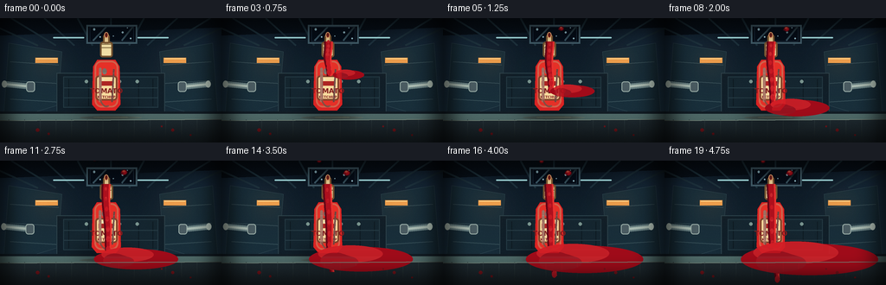
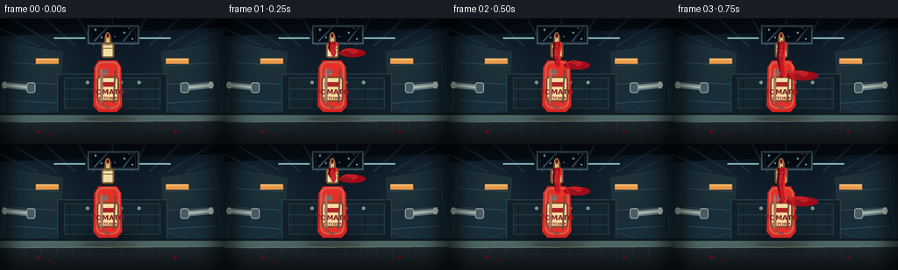
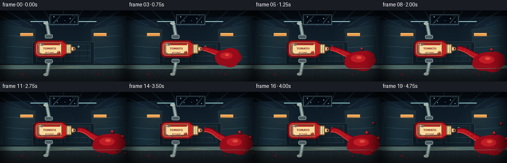
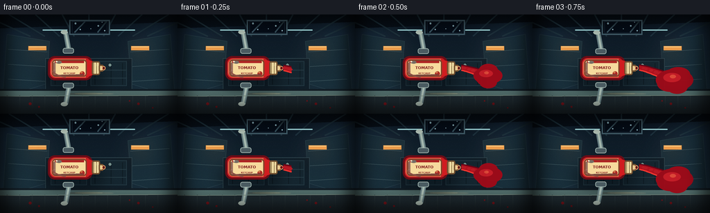
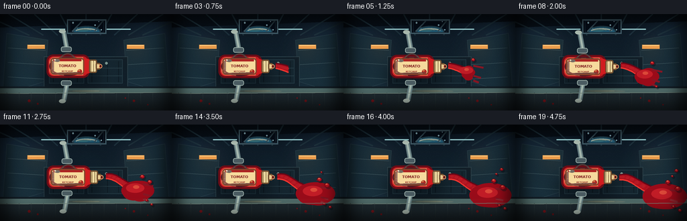

CODING AGENTS AS PIXEL WORLD MODELS
traex/DeepSeek-V4.1-Flash · mechanics_0004
点击播放 · 原生 RGB 像素
逐轮保存的候选
回放视频、检查图与代码变化。
每份候选均可单独播放。实际图片检查记录在下方工具轨迹中。
候选 01播放与检查图
点击播放 · 原生 RGB 像素


展开代码变化
--- 上一保存版本
+++ 本次保存版本
@@ -0,0 +1,343 @@
+from __future__ import annotations
+
+from pathlib import Path
+
+import numpy as np
+from PIL import Image, ImageDraw, ImageFilter, ImageFont
+
+import artifact_io
+
+
+ROOT = Path(__file__).resolve().parent
+W, H, N, FPS = 256, 144, 20, 4
+SS = 4
+RW, RH = W * SS, H * SS
+
+
+def rounded_mask(size, radius):
+ mask = Image.new("L", size, 0)
+ ImageDraw.Draw(mask).rounded_rectangle((0, 0, size[0] - 1, size[1] - 1), radius, fill=255)
+ return mask
+
+
+def paste_rgba(base, image, xy):
+ base.alpha_composite(image, dest=xy)
+
+
+def add_glow(layer, ellipse, color, blur):
+ glow = Image.new("RGBA", layer.size, (0, 0, 0, 0))
+ ImageDraw.Draw(glow).ellipse(ellipse, fill=color)
+ glow = glow.filter(ImageFilter.GaussianBlur(blur))
+ layer.alpha_composite(glow)
+
+
+def build_background():
+ y = np.linspace(0, 1, RH)[:, None, None]
+ x = np.linspace(0, 1, RW)[None, :, None]
+ top = np.array([12, 23, 35], dtype=float)
+ bottom = np.array([23, 42, 52], dtype=float)
+ rgb = top * (1 - y) + bottom * y
+ rgb = np.broadcast_to(rgb, (RH, RW, 3)).copy()
+
+ # Broad, cool wall panels. Their perspective lines converge behind the bottle.
+ for side in (-1, 1):
+ panel = np.zeros((RH, RW), dtype=float)
+ px = (x[..., 0] - 0.5) * side
+ panel = np.clip((px - 0.12) / 0.30, 0, 1)
+ rgb += panel[..., None] * np.array([8, 14, 19])
+
+ image = Image.fromarray(np.clip(rgb, 0, 255).astype(np.uint8), "RGB").convert("RGBA")
+ draw = ImageDraw.Draw(image)
+
+ # Ceiling ribs and a narrow observation window.
+ draw.polygon([(0, 0), (RW, 0), (RW, int(RH * .075)), (0, int(RH * .14))], fill=(8, 16, 25, 255))
+ for x0 in np.linspace(-RW * .10, RW * 1.10, 9):
+ draw.line([(x0, 0), (RW * .5 + (x0 - RW * .5) * .55, RH * .22)], fill=(30, 52, 64, 190), width=SS * 2)
+ draw.rectangle((int(RW * .39), int(RH * .055), int(RW * .62), int(RH * .205)),
+ fill=(4, 11, 20, 255), outline=(66, 93, 105, 255), width=SS * 2)
+ draw.rectangle((int(RW * .405), int(RH * .068), int(RW * .605), int(RH * .188)),
+ fill=(5, 13, 24, 255), outline=(22, 37, 51, 255), width=SS)
+ for sx, sy, r in [(.425, .090, 1.3), (.452, .151, .8), (.554, .115, 1.1), (.575, .078, .7),
+ (.512, .144, .6), (.590, .163, .9)]:
+ draw.ellipse((RW * sx - SS * r, RH * sy - SS * r, RW * sx + SS * r, RH * sy + SS * r),
+ fill=(160, 205, 218, 190))
+ # Window reflections.
+ draw.line((RW * .42, RH * .18, RW * .48, RH * .07), fill=(72, 106, 122, 90), width=SS * 2)
+ draw.line((RW * .55, RH * .18, RW * .60, RH * .07), fill=(72, 106, 122, 65), width=SS * 2)
+
+ # Side wall panel seams and inset blue-gray plates.
+ left_panel = [(int(RW * .04), int(RH * .20)), (int(RW * .28), int(RH * .27)),
+ (int(RW * .26), int(RH * .70)), (int(RW * .015), int(RH * .83))]
+ right_panel = [(int(RW * .72), int(RH * .27)), (int(RW * .96), int(RH * .20)),
+ (int(RW * .985), int(RH * .83)), (int(RW * .74), int(RH * .70))]
+ for poly in (left_panel, right_panel):
+ draw.polygon(poly, fill=(25, 47, 59, 210), outline=(67, 94, 102, 180))
+ for yy in (.35, .50, .65):
+ draw.line((RW * .045, RH * yy, RW * .265, RH * (yy + .025)), fill=(57, 82, 91, 160), width=SS)
+ draw.line((RW * .735, RH * (yy + .025), RW * .955, RH * yy), fill=(57, 82, 91, 160), width=SS)
+
+ # Rear cabinetry and a softly lit work counter.
+ draw.rectangle((int(RW * .255), int(RH * .44), int(RW * .745), int(RH * .76)),
+ fill=(17, 31, 41, 255), outline=(44, 66, 75, 255), width=SS)
+ draw.rectangle((int(RW * .286), int(RH * .47), int(RW * .49), int(RH * .72)),
+ fill=(21, 38, 48, 255), outline=(36, 58, 68, 255), width=SS)
+ draw.rectangle((int(RW * .51), int(RH * .47), int(RW * .714), int(RH * .72)),
+ fill=(21, 38, 48, 255), outline=(36, 58, 68, 255), width=SS)
+ for xx in (.31, .40, .45, .535, .625, .69):
+ draw.line((RW * xx, RH * .49, RW * xx, RH * .705), fill=(14, 26, 34, 150), width=SS)
+ for yy in (.56, .64):
+ draw.line((RW * .29, RH * yy, RW * .71, RH * yy), fill=(39, 61, 70, 150), width=SS)
+ for xx in (.39, .47, .54, .62):
+ draw.ellipse((RW * xx - SS * 2, RH * .51 - SS * 2, RW * xx + SS * 2, RH * .51 + SS * 2),
+ fill=(124, 151, 145, 220))
+ draw.polygon([(0, int(RH * .75)), (RW, int(RH * .75)), (RW, RH), (0, RH)], fill=(19, 30, 38, 255))
+ draw.polygon([(0, int(RH * .77)), (RW, int(RH * .77)), (RW, int(RH * .815)), (0, int(RH * .825))],
+ fill=(80, 107, 105, 255))
+ draw.polygon([(0, int(RH * .825)), (RW, int(RH * .815)), (RW, RH), (0, RH)], fill=(30, 41, 47, 255))
+ for xx in np.linspace(.04, .96, 14):
+ draw.line((RW * xx, RH * .817, RW * xx, RH), fill=(42, 56, 61, 150), width=SS)
+
+ # Warm utility lights create contrast against the blue station.
+ for sx in (.21, .79):
+ add_glow(image, (RW * sx - SS * 20, RH * .34 - SS * 14, RW * sx + SS * 20, RH * .34 + SS * 20),
+ (255, 166, 81, 45), SS * 16)
+ draw.rectangle((RW * sx - SS * 13, RH * .34 - SS * 3, RW * sx + SS * 13, RH * .34 + SS * 3),
+ fill=(239, 159, 77, 255))
+ draw.line((RW * sx - SS * 12, RH * .34 - SS * 2, RW * sx + SS * 12, RH * .34 - SS * 2),
+ fill=(255, 216, 142, 255), width=SS)
+
+ # Overhead light strips and reflected highlights on the counter.
+ for sx in (.31, .69):
+ add_glow(image, (RW * sx - SS * 26, RH * .13, RW * sx + SS * 26, RH * .21),
+ (99, 198, 220, 32), SS * 22)
+ draw.rounded_rectangle((RW * sx - SS * 18, RH * .151, RW * sx + SS * 18, RH * .161),
+ radius=SS * 4, fill=(172, 232, 235, 235))
+ draw.ellipse((RW * .36, RH * .787, RW * .64, RH * .813), fill=(110, 132, 123, 80))
+ draw.ellipse((RW * .42, RH * .791, RW * .58, RH * .804), fill=(151, 167, 145, 70))
+
+ # Subtle scanline/ambient texture, only strong enough to keep the frame from looking flat.
+ arr = np.asarray(image).astype(np.int16)
+ noise = np.random.default_rng(21).normal(0, 1.6, (RH, RW, 1))
+ arr[..., :3] = np.clip(arr[..., :3] + noise, 0, 255)
+ arr[::SS * 2, :, :3] = np.clip(arr[::SS * 2, :, :3] * .96, 0, 255)
+ return Image.fromarray(arr.astype(np.uint8), "RGBA")
+
+
+def bottle_geometry(cx, cy, t):
+ # A stout squeeze bottle tipped slightly toward the viewer/right.
+ squeeze = .035 + .025 * np.sin(np.pi * min(1.0, t / 4.2))
+ body_w = 34 * SS * (1 + squeeze)
+ body_h = 67 * SS
+ return {
+ "cx": cx, "cy": cy, "bw": body_w, "bh": body_h,
+ "left": cx - body_w / 2, "right": cx + body_w / 2,
+ "top": cy - body_h * .54, "bottom": cy + body_h * .46,
+ }
+
+
+def draw_bottle(base, cx, cy, t):
+ g = bottle_geometry(cx, cy, t)
+ left, right, top, bottom = g["left"], g["right"], g["top"], g["bottom"]
+ shadow = Image.new("RGBA", base.size, (0, 0, 0, 0))
+ sd = ImageDraw.Draw(shadow)
+ sd.ellipse((left - SS * 17, bottom - SS * 8, right + SS * 17, bottom + SS * 11),
+ fill=(0, 5, 10, 105))
+ base.alpha_composite(shadow.filter(ImageFilter.GaussianBlur(SS * 9)))
+
+ bottle = Image.new("RGBA", base.size, (0, 0, 0, 0))
+ d = ImageDraw.Draw(bottle)
+ # Body silhouette, with a raised label panel.
+ body = [
+ (left + SS * 7, top + SS * 8), (right - SS * 7, top + SS * 8),
+ (right - SS * 2, top + SS * 16), (right - SS * 1, bottom - SS * 7),
+ (right - SS * 7, bottom), (left + SS * 7, bottom),
+ (left + SS * 1, bottom - SS * 7), (left + SS * 2, top + SS * 16),
+ ]
+ d.polygon(body, fill=(218, 36, 35, 255), outline=(115, 15, 24, 255))
+ d.rounded_rectangle((left + SS * 4, top + SS * 9, right - SS * 4, bottom - SS * 4),
+ radius=SS * 8, fill=(229, 48, 39, 255), outline=(250, 111, 82, 210), width=SS * 2)
+ # A broad label makes the object immediately legible.
+ label_l, label_r = left + SS * 5, right - SS * 5
+ label_t, label_b = top + SS * 26, top + SS * 55
+ d.rounded_rectangle((label_l, label_t, label_r, label_b), radius=SS * 4,
+ fill=(246, 218, 157, 255), outline=(132, 67, 42, 255), width=SS * 2)
+ d.rectangle((label_l + SS * 4, label_t + SS * 7, label_r - SS * 4, label_t + SS * 12),
+ fill=(173, 35, 34, 255))
+ font = ImageFont.truetype("/usr/share/fonts/truetype/dejavu/DejaVuSans-Bold.ttf", int(SS * 8.2))
+ small = ImageFont.truetype("/usr/share/fonts/truetype/dejavu/DejaVuSans-Bold.ttf", int(SS * 4.0))
+ d.text((cx, label_t + SS * 18), "TOMATO", font=font, fill=(129, 28, 29, 255), anchor="mm")
+ d.text((cx, label_t + SS * 25), "KETCHUP", font=small, fill=(129, 28, 29, 255), anchor="mm")
+ # White vertical highlight and red reflected rim.
+ d.rounded_rectangle((left + SS * 9, top + SS * 17, left + SS * 12, bottom - SS * 10),
+ radius=SS * 2, fill=(255, 167, 137, 150))
+ d.line((right - SS * 9, top + SS * 19, right - SS * 11, bottom - SS * 10),
+ fill=(255, 130, 103, 100), width=SS * 2)
+ # Cap and nozzle.
+ cap_w = g["bw"] * .42
+ cap_l, cap_r = cx - cap_w / 2, cx + cap_w / 2
+ cap_t, cap_b = top - SS * 13, top + SS * 5
+ d.rounded_rectangle((cap_l, cap_t, cap_r, cap_b), radius=SS * 3,
+ fill=(242, 223, 166, 255), outline=(115, 82, 47, 255), width=SS * 2)
+ for yy in (cap_t + SS * 3, cap_t + SS * 7):
+ d.line((cap_l + SS * 2, yy, cap_r - SS * 2, yy), fill=(178, 138, 77, 180), width=SS)
+ neck_w = cap_w * .53
+ d.rounded_rectangle((cx - neck_w / 2, cap_t - SS * 8, cx + neck_w / 2, cap_t + SS * 2),
+ radius=SS * 2, fill=(238, 210, 151, 255), outline=(125, 87, 49, 255), width=SS * 2)
+ d.ellipse((cx - neck_w * .31, cap_t - SS * 11, cx + neck_w * .31, cap_t - SS * 4),
+ fill=(117, 36, 30, 255), outline=(251, 176, 118, 255), width=SS)
+ # Fine highlights and shadow, plus a tiny glossy label catchlight.
+ d.ellipse((left + SS * 13, top + SS * 18, left + SS * 18, top + SS * 25),
+ fill=(255, 212, 180, 110))
+ d.ellipse((label_l + SS * 8, label_t + SS * 4, label_l + SS * 10, label_t + SS * 6),
+ fill=(255, 248, 210, 230))
+ d.arc((left + SS * 7, top + SS * 12, right - SS * 7, bottom - SS * 4),
+ 72, 138, fill=(255, 133, 100, 120), width=SS * 2)
+
+ base.alpha_composite(bottle)
+ return g
+
+
+def stream_center(t, g):
+ nozzle_x = g["cx"]
+ nozzle_y = g["top"] - SS * 13
+ # Gentle initial curve, then a wider, slower plume under microgravity.
+ s = np.clip((t - .22) / 4.78, 0, 1)
+ length = SS * (11 + 89 * (1 - np.exp(-3.3 * s)) + 16 * s)
+ bend = SS * (2.5 * np.sin(1.4 * s + .3) + 5 * s * s)
+ return nozzle_x, nozzle_y, length, bend
+
+
+def draw_stream(base, t, g):
+ nozzle_x, nozzle_y, length, bend = stream_center(t, g)
+ if t < .24:
+ return
+ fluid = Image.new("RGBA", base.size, (0, 0, 0, 0))
+ d = ImageDraw.Draw(fluid)
+ # Main viscous column. Segments get narrower as they travel away from the nozzle.
+ samples = 42
+ points_l, points_r = [], []
+ for i in range(samples + 1):
+ u = i / samples
+ yy = nozzle_y + u * length
+ xx = nozzle_x + bend * u * u + SS * .7 * np.sin(u * 8 + t * 1.3)
+ radius = SS * (4.2 * (1 - .56 * u) + .55 * np.sin(np.pi * u))
+ points_l.append((xx - radius, yy))
+ points_r.append((xx + radius, yy))
+ poly = points_l + points_r[::-1]
+ d.polygon(poly, fill=(174, 16, 29, 255))
+ d.line(points_l, fill=(96, 6, 22, 255), width=SS * 2)
+ d.line(points_r, fill=(232, 49, 47, 255), width=SS * 2)
+ # Uneven blobs traveling down the column.
+ for k in range(8):
+ u = ((t * .34 + k / 8) % 1.0)
+ yy = nozzle_y + u * length
+ xx = nozzle_x + bend * u * u + SS * .7 * np.sin(u * 8 + t * 1.3)
+ r = SS * (1.3 + 1.4 * u)
+ d.ellipse((xx - r, yy - r * 1.5, xx + r, yy + r * 1.5), fill=(198, 22, 34, 235))
+ # The fluid pools into a broad, soft-edged red mass on the right side of the counter.
+ pool_t = max(0, (t - .55) / 4.45)
+ pcx = nozzle_x + SS * (23 + 23 * pool_t)
+ pcy = min(RH * .79, nozzle_y + length * .96)
+ p_w = SS * (15 + 68 * pool_t)
+ p_h = SS * (7 + 21 * pool_t)
+ d.ellipse((pcx - p_w, pcy - p_h * .66, pcx + p_w, pcy + p_h * .70), fill=(160, 11, 25, 255))
+ d.ellipse((pcx - p_w * .82, pcy - p_h * .75, pcx + p_w * .42, pcy + p_h * .20),
+ fill=(209, 29, 37, 235))
+ # Make the stream meet the pool with a curved trailing edge.
+ for j in range(5):
+ u = j / 4
+ d.ellipse((pcx - p_w * (.50 + .28 * u), pcy - p_h * (.15 + .2 * u),
+ pcx - p_w * (.05 + .17 * u), pcy + p_h * (.5 + .1 * u)),
+ fill=(180, 16, 29, 210))
+ base.alpha_composite(fluid)
+
+ # Airborne blobs detach and drift with slight rotation/parallax.
+ blobs = Image.new("RGBA", base.size, (0, 0, 0, 0))
+ bd = ImageDraw.Draw(blobs)
+ for i, (birth, dx, dy, scale, phase) in enumerate([
+ (1.05, 12, -16, .75, .3), (1.65, -19, -30, .52, 1.4),
+ (2.18, 33, -40, .92, 2.0), (2.65, -31, -53, .62, .7),
+ (3.20, 21, -63, .46, 2.8), (3.65, -45, -66, .77, 1.1),
+ ]):
+ if t < birth:
+ continue
+ age = min(2.0, t - birth)
+ cx = nozzle_x + SS * (dx + 5.5 * age + 1.2 * np.sin(age * 2 + phase))
+ cy = nozzle_y + SS * (dy + 1.8 * age + .7 * np.cos(age * 1.7 + phase))
+ r = SS * scale * (3.2 + .45 * age)
+ # Soft shadow under each globule gives depth against the station.
+ bd.ellipse((cx - r * 1.25 + SS * 2, cy - r * 1.2 + SS * 2,
+ cx + r * 1.25 + SS * 2, cy + r * 1.2 + SS * 2),
+ fill=(0, 3, 8, 65))
+ bd.ellipse((cx - r * 1.30, cy - r * 1.10, cx + r * 1.30, cy + r * 1.10),
+ fill=(178, 15, 29, 255), outline=(89, 5, 17, 180), width=SS)
+ bd.ellipse((cx - r * .70, cy - r * .80, cx + r * .45, cy - r * .05),
+ fill=(235, 58, 47, 235))
+ bd.ellipse((cx - r * .42, cy - r * .63, cx + r * .02, cy - r * .35),
+ fill=(255, 168, 120, 180))
+ # A little stretched tail communicates viscosity, not ballistic spray.
+ if scale > .6:
+ bd.ellipse((cx - r * 1.45, cy + r * .15, cx - r * .25, cy + r * .58),
+ fill=(146, 10, 23, 180))
+ base.alpha_composite(blobs)
+
+
+def draw_hand_and_actuator(base, g, t):
+ # A small robotic gripper at the bottle shoulders, squeezed slowly.
+ grip = .5 + .5 * np.sin(np.pi * min(1.0, t / 4.4))
+ jaw_offset = SS * (g["bw"] * .58 + 7 - 2 * grip)
+ cy = g["cy"] + SS * 3
+ arm = Image.new("RGBA", base.size, (0, 0, 0, 0))
+ d = ImageDraw.Draw(arm)
+ for side in (-1, 1):
+ x0 = g["cx"] + side * jaw_offset
+ x1 = x0 + side * SS * 30
+ d.line((x0, cy, x1, cy - SS * 3), fill=(103, 126, 128, 255), width=SS * 7)
+ d.line((x0, cy, x1, cy - SS * 3), fill=(168, 185, 176, 255), width=SS * 3)
+ d.rounded_rectangle((x0 - SS * 5, cy - SS * 6, x0 + SS * 5, cy + SS * 6),
+ radius=SS * 3, fill=(74, 91, 97, 255), outline=(155, 174, 168, 255), width=SS)
+ d.ellipse((x1 - SS * 3, cy - SS * 7, x1 + SS * 3, cy + SS * 1),
+ fill=(178, 194, 183, 255))
+ # The actuator is mostly hidden behind the bottle, but the lateral arms read as a squeeze.
+ base.alpha_composite(arm)
+
+
+def draw_foreground_details(base, t):
+ d = ImageDraw.Draw(base)
+ # A few fixed red specks and a small reflection on the counter.
+ for i, (x, y, r) in enumerate([(.17, .90, 2.1), (.22, .93, 1.4), (.78, .90, 1.7),
+ (.86, .94, 1.1), (.73, .87, 1.0)]):
+ d.ellipse((RW * x - SS * r, RH * y - SS * r, RW * x + SS * r, RH * y + SS * r),
+ fill=(139, 23, 31, 150))
+ # Counter edge light and a restrained vignette.
+ d.line((0, RH * .823, RW, RH * .814), fill=(131, 151, 138, 110), width=SS)
+ overlay = Image.new("RGBA", base.size, (0, 0, 0, 0))
+ od = ImageDraw.Draw(overlay)
+ od.rectangle((0, 0, RW, RH), outline=(0, 0, 0, 255), width=SS * 7)
+ base.alpha_composite(overlay.filter(ImageFilter.GaussianBlur(SS * 13)))
+
+
+def frame_at(t, background):
+ base = background.copy()
+ # A faint moving light on the wall keeps the environment alive.
+ glow = Image.new("RGBA", base.size, (0, 0, 0, 0))
+ gx = RW * (.30 + .40 * (t / 5))
+ add_glow(glow, (gx - SS * 35, RH * .25, gx + SS * 35, RH * .58),
+ (51, 130, 150, 18), SS * 26)
+ base.alpha_composite(glow)
+ cx, cy = RW * .48, RH * .53
+ g = draw_bottle(base, cx, cy, t)
+ draw_hand_and_actuator(base, g, t)
+ draw_stream(base, t, g)
+ draw_foreground_details(base, t)
+ return base.convert("RGB").resize((W, H), Image.Resampling.LANCZOS)
+
+
+def main():
+ background = build_background()
+ frames = np.stack([np.asarray(frame_at(i / FPS, background), dtype=np.uint8) for i in range(N)])
+ artifact_io.save(frames, ROOT)
+
+
+if __name__ == "__main__":
+ main()
候选 02播放与检查图
点击播放 · 原生 RGB 像素


展开代码变化
--- 上一保存版本
+++ 本次保存版本
@@ -124,14 +124,16 @@
def bottle_geometry(cx, cy, t):
- # A stout squeeze bottle tipped slightly toward the viewer/right.
+ # The bottle floats horizontally, leaving its nozzle free in the cabin.
squeeze = .035 + .025 * np.sin(np.pi * min(1.0, t / 4.2))
- body_w = 34 * SS * (1 + squeeze)
- body_h = 67 * SS
+ body_w = 62 * SS * (1 + squeeze)
+ body_h = 35 * SS
return {
"cx": cx, "cy": cy, "bw": body_w, "bh": body_h,
- "left": cx - body_w / 2, "right": cx + body_w / 2,
- "top": cy - body_h * .54, "bottom": cy + body_h * .46,
+ "left": cx - body_w * .60, "right": cx + body_w * .40,
+ "top": cy - body_h / 2, "bottom": cy + body_h / 2,
+ "nozzle_x": cx + body_w * .40 + SS * 17,
+ "nozzle_y": cy,
}
@@ -140,130 +142,140 @@
left, right, top, bottom = g["left"], g["right"], g["top"], g["bottom"]
shadow = Image.new("RGBA", base.size, (0, 0, 0, 0))
sd = ImageDraw.Draw(shadow)
- sd.ellipse((left - SS * 17, bottom - SS * 8, right + SS * 17, bottom + SS * 11),
- fill=(0, 5, 10, 105))
+ sd.ellipse((left - SS * 9, top + SS * 12, right + SS * 18, bottom + SS * 18),
+ fill=(0, 5, 10, 95))
base.alpha_composite(shadow.filter(ImageFilter.GaussianBlur(SS * 9)))
bottle = Image.new("RGBA", base.size, (0, 0, 0, 0))
d = ImageDraw.Draw(bottle)
- # Body silhouette, with a raised label panel.
- body = [
- (left + SS * 7, top + SS * 8), (right - SS * 7, top + SS * 8),
- (right - SS * 2, top + SS * 16), (right - SS * 1, bottom - SS * 7),
- (right - SS * 7, bottom), (left + SS * 7, bottom),
- (left + SS * 1, bottom - SS * 7), (left + SS * 2, top + SS * 16),
- ]
- d.polygon(body, fill=(218, 36, 35, 255), outline=(115, 15, 24, 255))
- d.rounded_rectangle((left + SS * 4, top + SS * 9, right - SS * 4, bottom - SS * 4),
- radius=SS * 8, fill=(229, 48, 39, 255), outline=(250, 111, 82, 210), width=SS * 2)
+ # Body silhouette and raised label panel.
+ d.rounded_rectangle((left, top, right, bottom), radius=SS * 10,
+ fill=(207, 28, 32, 255), outline=(106, 12, 22, 255), width=SS * 3)
+ d.rounded_rectangle((left + SS * 4, top + SS * 4, right - SS * 3, bottom - SS * 4),
+ radius=SS * 8, fill=(228, 45, 38, 255),
+ outline=(250, 113, 82, 220), width=SS * 2)
+ # Shoulder taper and cap.
+ shoulder = right - SS * 9
+ d.polygon([(shoulder, top + SS * 4), (right + SS * 3, cy - SS * 9),
+ (right + SS * 3, cy + SS * 9), (shoulder, bottom - SS * 4)],
+ fill=(208, 29, 32, 255), outline=(106, 12, 22, 255))
+ d.rounded_rectangle((right - SS * 1, cy - SS * 10, right + SS * 11, cy + SS * 10),
+ radius=SS * 3, fill=(239, 220, 163, 255),
+ outline=(112, 78, 46, 255), width=SS * 2)
+ for xx in (right + SS * 2, right + SS * 6):
+ d.line((xx, cy - SS * 8, xx, cy + SS * 8), fill=(178, 137, 78, 190), width=SS)
+ d.rounded_rectangle((right + SS * 9, cy - SS * 5, right + SS * 16, cy + SS * 5),
+ radius=SS * 2, fill=(231, 203, 145, 255),
+ outline=(112, 78, 46, 255), width=SS * 2)
+ d.ellipse((right + SS * 14, cy - SS * 3, right + SS * 19, cy + SS * 3),
+ fill=(91, 25, 24, 255), outline=(250, 171, 113, 255), width=SS)
# A broad label makes the object immediately legible.
- label_l, label_r = left + SS * 5, right - SS * 5
- label_t, label_b = top + SS * 26, top + SS * 55
- d.rounded_rectangle((label_l, label_t, label_r, label_b), radius=SS * 4,
+ label_l, label_r = left + SS * 6, right - SS * 8
+ label_t, label_b = top + SS * 5, bottom - SS * 5
+ d.rounded_rectangle((label_l, label_t, label_r, label_b), radius=SS * 5,
fill=(246, 218, 157, 255), outline=(132, 67, 42, 255), width=SS * 2)
- d.rectangle((label_l + SS * 4, label_t + SS * 7, label_r - SS * 4, label_t + SS * 12),
+ d.rectangle((label_l + SS * 4, label_t + SS * 2, label_r - SS * 4, label_t + SS * 5),
fill=(173, 35, 34, 255))
- font = ImageFont.truetype("/usr/share/fonts/truetype/dejavu/DejaVuSans-Bold.ttf", int(SS * 8.2))
- small = ImageFont.truetype("/usr/share/fonts/truetype/dejavu/DejaVuSans-Bold.ttf", int(SS * 4.0))
- d.text((cx, label_t + SS * 18), "TOMATO", font=font, fill=(129, 28, 29, 255), anchor="mm")
- d.text((cx, label_t + SS * 25), "KETCHUP", font=small, fill=(129, 28, 29, 255), anchor="mm")
+ font = ImageFont.truetype("/usr/share/fonts/truetype/dejavu/DejaVuSans-Bold.ttf", int(SS * 5.5))
+ small = ImageFont.truetype("/usr/share/fonts/truetype/dejavu/DejaVuSans-Bold.ttf", int(SS * 3.4))
+ label_cx = (label_l + label_r) / 2
+ d.text((label_cx, label_t + SS * 12), "TOMATO", font=font, fill=(129, 28, 29, 255), anchor="mm")
+ d.text((label_cx, label_t + SS * 20), "KETCHUP", font=small, fill=(129, 28, 29, 255), anchor="mm")
+ d.ellipse((label_r - SS * 10, label_b - SS * 8, label_r - SS * 3, label_b - SS * 1),
+ fill=(190, 43, 35, 230))
+ d.ellipse((label_r - SS * 9, label_b - SS * 8, label_r - SS * 6, label_b - SS * 5),
+ fill=(247, 139, 83, 210))
# White vertical highlight and red reflected rim.
- d.rounded_rectangle((left + SS * 9, top + SS * 17, left + SS * 12, bottom - SS * 10),
- radius=SS * 2, fill=(255, 167, 137, 150))
- d.line((right - SS * 9, top + SS * 19, right - SS * 11, bottom - SS * 10),
- fill=(255, 130, 103, 100), width=SS * 2)
- # Cap and nozzle.
- cap_w = g["bw"] * .42
- cap_l, cap_r = cx - cap_w / 2, cx + cap_w / 2
- cap_t, cap_b = top - SS * 13, top + SS * 5
- d.rounded_rectangle((cap_l, cap_t, cap_r, cap_b), radius=SS * 3,
- fill=(242, 223, 166, 255), outline=(115, 82, 47, 255), width=SS * 2)
- for yy in (cap_t + SS * 3, cap_t + SS * 7):
- d.line((cap_l + SS * 2, yy, cap_r - SS * 2, yy), fill=(178, 138, 77, 180), width=SS)
- neck_w = cap_w * .53
- d.rounded_rectangle((cx - neck_w / 2, cap_t - SS * 8, cx + neck_w / 2, cap_t + SS * 2),
- radius=SS * 2, fill=(238, 210, 151, 255), outline=(125, 87, 49, 255), width=SS * 2)
- d.ellipse((cx - neck_w * .31, cap_t - SS * 11, cx + neck_w * .31, cap_t - SS * 4),
- fill=(117, 36, 30, 255), outline=(251, 176, 118, 255), width=SS)
+ d.rounded_rectangle((left + SS * 8, top + SS * 9, left + SS * 11, bottom - SS * 8),
+ radius=SS * 2, fill=(255, 173, 137, 135))
+ d.line((left + SS * 9, bottom - SS * 7, right - SS * 13, bottom - SS * 8),
+ fill=(255, 132, 102, 105), width=SS * 2)
# Fine highlights and shadow, plus a tiny glossy label catchlight.
- d.ellipse((left + SS * 13, top + SS * 18, left + SS * 18, top + SS * 25),
- fill=(255, 212, 180, 110))
- d.ellipse((label_l + SS * 8, label_t + SS * 4, label_l + SS * 10, label_t + SS * 6),
- fill=(255, 248, 210, 230))
- d.arc((left + SS * 7, top + SS * 12, right - SS * 7, bottom - SS * 4),
- 72, 138, fill=(255, 133, 100, 120), width=SS * 2)
+ d.ellipse((left + SS * 12, top + SS * 7, left + SS * 20, top + SS * 11),
+ fill=(255, 211, 180, 105))
+ d.ellipse((label_l + SS * 5, label_t + SS * 2, label_l + SS * 8, label_t + SS * 4),
+ fill=(255, 249, 213, 230))
+ d.arc((left + SS * 5, top + SS * 5, right - SS * 3, bottom - SS * 3),
+ 105, 165, fill=(255, 135, 101, 130), width=SS * 2)
base.alpha_composite(bottle)
return g
-def stream_center(t, g):
- nozzle_x = g["cx"]
- nozzle_y = g["top"] - SS * 13
- # Gentle initial curve, then a wider, slower plume under microgravity.
- s = np.clip((t - .22) / 4.78, 0, 1)
- length = SS * (11 + 89 * (1 - np.exp(-3.3 * s)) + 16 * s)
- bend = SS * (2.5 * np.sin(1.4 * s + .3) + 5 * s * s)
- return nozzle_x, nozzle_y, length, bend
+def stream_point(u, t, g):
+ # A slightly sagging, free-floating jet. It bends away from the bottle
+ # immediately, so the bottle silhouette stays unobstructed.
+ nozzle_x, nozzle_y = g["nozzle_x"], g["nozzle_y"]
+ x = nozzle_x + SS * (2 + 60 * u + 4.0 * np.sin(u * 4.2 + t * .45))
+ y = nozzle_y + SS * (1.5 * u + 21 * u ** 1.7 + 1.8 * np.sin(u * 5.5 - t * .7))
+ return x, y
def draw_stream(base, t, g):
- nozzle_x, nozzle_y, length, bend = stream_center(t, g)
if t < .24:
return
+ growth = 1 - np.exp(-2.8 * max(0, t - .24))
+ extent = min(1.0, .13 + .87 * growth)
fluid = Image.new("RGBA", base.size, (0, 0, 0, 0))
d = ImageDraw.Draw(fluid)
- # Main viscous column. Segments get narrower as they travel away from the nozzle.
- samples = 42
+ # Main viscous column, widening as it leaves the nozzle.
+ samples = 36
points_l, points_r = [], []
for i in range(samples + 1):
- u = i / samples
- yy = nozzle_y + u * length
- xx = nozzle_x + bend * u * u + SS * .7 * np.sin(u * 8 + t * 1.3)
- radius = SS * (4.2 * (1 - .56 * u) + .55 * np.sin(np.pi * u))
- points_l.append((xx - radius, yy))
- points_r.append((xx + radius, yy))
+ u = (i / samples) * extent
+ xx, yy = stream_point(u, t, g)
+ radius = SS * (3.7 + 2.7 * u + .45 * np.sin(np.pi * u))
+ points_l.append((xx, yy - radius))
+ points_r.append((xx, yy + radius))
poly = points_l + points_r[::-1]
d.polygon(poly, fill=(174, 16, 29, 255))
- d.line(points_l, fill=(96, 6, 22, 255), width=SS * 2)
- d.line(points_r, fill=(232, 49, 47, 255), width=SS * 2)
+ d.line(points_l, fill=(101, 6, 22, 255), width=SS * 2)
+ d.line(points_r, fill=(238, 55, 48, 255), width=SS * 2)
# Uneven blobs traveling down the column.
- for k in range(8):
- u = ((t * .34 + k / 8) % 1.0)
- yy = nozzle_y + u * length
- xx = nozzle_x + bend * u * u + SS * .7 * np.sin(u * 8 + t * 1.3)
- r = SS * (1.3 + 1.4 * u)
- d.ellipse((xx - r, yy - r * 1.5, xx + r, yy + r * 1.5), fill=(198, 22, 34, 235))
- # The fluid pools into a broad, soft-edged red mass on the right side of the counter.
- pool_t = max(0, (t - .55) / 4.45)
- pcx = nozzle_x + SS * (23 + 23 * pool_t)
- pcy = min(RH * .79, nozzle_y + length * .96)
- p_w = SS * (15 + 68 * pool_t)
- p_h = SS * (7 + 21 * pool_t)
- d.ellipse((pcx - p_w, pcy - p_h * .66, pcx + p_w, pcy + p_h * .70), fill=(160, 11, 25, 255))
- d.ellipse((pcx - p_w * .82, pcy - p_h * .75, pcx + p_w * .42, pcy + p_h * .20),
- fill=(209, 29, 37, 235))
- # Make the stream meet the pool with a curved trailing edge.
- for j in range(5):
- u = j / 4
- d.ellipse((pcx - p_w * (.50 + .28 * u), pcy - p_h * (.15 + .2 * u),
- pcx - p_w * (.05 + .17 * u), pcy + p_h * (.5 + .1 * u)),
- fill=(180, 16, 29, 210))
+ for k in range(7):
+ u = ((t * .22 + k / 7) % .92) * extent
+ xx, yy = stream_point(u, t, g)
+ r = SS * (1.4 + 1.8 * u)
+ d.ellipse((xx - r * 1.6, yy - r, xx + r * 1.6, yy + r), fill=(201, 24, 35, 225))
+
+ # At the leading edge the ketchup gathers into a lobed, slowly spreading mass.
+ if extent > .55:
+ spread = (extent - .55) / .45
+ ex, ey = stream_point(extent, t, g)
+ ex += SS * (2 + 9 * spread)
+ ey += SS * (1 + 4 * spread)
+ lobes = [
+ (0, 0, 20 + 13 * spread, 12 + 7 * spread),
+ (-12 * spread, 5, 15 + 7 * spread, 10 + 4 * spread),
+ (10 * spread, -8, 13 + 8 * spread, 9 + 3 * spread),
+ (7 * spread, 10, 12 + 6 * spread, 8 + 4 * spread),
+ ]
+ for dx, dy, rx, ry in lobes:
+ d.ellipse((ex + SS * dx - SS * rx, ey + SS * dy - SS * ry,
+ ex + SS * dx + SS * rx, ey + SS * dy + SS * ry),
+ fill=(158, 10, 24, 245))
+ d.ellipse((ex - SS * (12 + 8 * spread), ey - SS * (8 + 4 * spread),
+ ex + SS * (7 + 4 * spread), ey + SS * (2 + 2 * spread)),
+ fill=(205, 27, 37, 235))
+ d.ellipse((ex - SS * (5 + 3 * spread), ey - SS * (6 + 3 * spread),
+ ex + SS * (1 + 2 * spread), ey - SS * (2 + spread)),
+ fill=(245, 75, 56, 220))
base.alpha_composite(fluid)
- # Airborne blobs detach and drift with slight rotation/parallax.
+ # Airborne blobs detach from the spreading mass and drift with slight parallax.
blobs = Image.new("RGBA", base.size, (0, 0, 0, 0))
bd = ImageDraw.Draw(blobs)
for i, (birth, dx, dy, scale, phase) in enumerate([
- (1.05, 12, -16, .75, .3), (1.65, -19, -30, .52, 1.4),
- (2.18, 33, -40, .92, 2.0), (2.65, -31, -53, .62, .7),
- (3.20, 21, -63, .46, 2.8), (3.65, -45, -66, .77, 1.1),
+ (1.15, 12, -20, .72, .3), (1.75, 23, 18, .48, 1.4),
+ (2.28, 36, -9, .86, 2.0), (2.75, 42, 24, .57, .7),
+ (3.30, 55, -25, .43, 2.8), (3.70, 28, -38, .65, 1.1),
]):
if t < birth:
continue
age = min(2.0, t - birth)
- cx = nozzle_x + SS * (dx + 5.5 * age + 1.2 * np.sin(age * 2 + phase))
- cy = nozzle_y + SS * (dy + 1.8 * age + .7 * np.cos(age * 1.7 + phase))
+ base_x, base_y = stream_point(extent, t, g)
+ cx = base_x + SS * (dx + 3.3 * age + 1.2 * np.sin(age * 2 + phase))
+ cy = base_y + SS * (dy + 1.0 * age + .7 * np.cos(age * 1.7 + phase))
r = SS * scale * (3.2 + .45 * age)
# Soft shadow under each globule gives depth against the station.
bd.ellipse((cx - r * 1.25 + SS * 2, cy - r * 1.2 + SS * 2,
@@ -283,20 +295,20 @@
def draw_hand_and_actuator(base, g, t):
- # A small robotic gripper at the bottle shoulders, squeezed slowly.
+ # A compact robotic gripper squeezes the bottle from above and below.
grip = .5 + .5 * np.sin(np.pi * min(1.0, t / 4.4))
- jaw_offset = SS * (g["bw"] * .58 + 7 - 2 * grip)
- cy = g["cy"] + SS * 3
+ jaw_offset = g["bh"] * .5 + SS * (9 - 2.5 * grip)
+ cx = g["cx"] - SS * 8
arm = Image.new("RGBA", base.size, (0, 0, 0, 0))
d = ImageDraw.Draw(arm)
for side in (-1, 1):
- x0 = g["cx"] + side * jaw_offset
- x1 = x0 + side * SS * 30
- d.line((x0, cy, x1, cy - SS * 3), fill=(103, 126, 128, 255), width=SS * 7)
- d.line((x0, cy, x1, cy - SS * 3), fill=(168, 185, 176, 255), width=SS * 3)
- d.rounded_rectangle((x0 - SS * 5, cy - SS * 6, x0 + SS * 5, cy + SS * 6),
+ y0 = g["cy"] + side * jaw_offset
+ y1 = y0 + side * SS * 27
+ d.line((cx, y0, cx - SS * 5, y1), fill=(100, 123, 126, 255), width=SS * 7)
+ d.line((cx, y0, cx - SS * 5, y1), fill=(164, 183, 174, 255), width=SS * 3)
+ d.rounded_rectangle((cx - SS * 9, y0 - SS * 4, cx + SS * 7, y0 + SS * 4),
radius=SS * 3, fill=(74, 91, 97, 255), outline=(155, 174, 168, 255), width=SS)
- d.ellipse((x1 - SS * 3, cy - SS * 7, x1 + SS * 3, cy + SS * 1),
+ d.ellipse((cx - SS * 12, y1 - SS * 3, cx - SS * 2, y1 + SS * 3),
fill=(178, 194, 183, 255))
# The actuator is mostly hidden behind the bottle, but the lateral arms read as a squeeze.
base.alpha_composite(arm)
@@ -325,7 +337,7 @@
add_glow(glow, (gx - SS * 35, RH * .25, gx + SS * 35, RH * .58),
(51, 130, 150, 18), SS * 26)
base.alpha_composite(glow)
- cx, cy = RW * .48, RH * .53
+ cx, cy = RW * .42, RH * .54
g = draw_bottle(base, cx, cy, t)
draw_hand_and_actuator(base, g, t)
draw_stream(base, t, g)
候选 03播放与检查图
点击播放 · 原生 RGB 像素

展开代码变化
--- 上一保存版本
+++ 本次保存版本
@@ -3,7 +3,7 @@
from pathlib import Path
import numpy as np
-from PIL import Image, ImageDraw, ImageFilter, ImageFont
+from PIL import Image, ImageChops, ImageDraw, ImageFilter, ImageFont
import artifact_io
@@ -46,7 +46,7 @@
panel = np.clip((px - 0.12) / 0.30, 0, 1)
rgb += panel[..., None] * np.array([8, 14, 19])
- image = Image.fromarray(np.clip(rgb, 0, 255).astype(np.uint8), "RGB").convert("RGBA")
+ image = Image.fromarray(np.clip(rgb, 0, 255).astype(np.uint8)).convert("RGBA")
draw = ImageDraw.Draw(image)
# Ceiling ribs and a narrow observation window.
@@ -61,6 +61,23 @@
(.512, .144, .6), (.590, .163, .9)]:
draw.ellipse((RW * sx - SS * r, RH * sy - SS * r, RW * sx + SS * r, RH * sy + SS * r),
fill=(160, 205, 218, 190))
+ # A blue planet rising through the observation window makes the setting legible.
+ earth = Image.new("RGBA", image.size, (0, 0, 0, 0))
+ ed = ImageDraw.Draw(earth)
+ ex0, ey0, ex1, ey1 = RW * .432, RH * .137, RW * .579, RH * .224
+ ed.ellipse((ex0 - SS * 2, ey0 - SS * 2, ex1 + SS * 2, ey1 + SS * 2),
+ fill=(76, 145, 165, 95))
+ ed.ellipse((ex0, ey0, ex1, ey1), fill=(35, 93, 119, 255))
+ ed.ellipse((RW * .448, RH * .153, RW * .515, RH * .181), fill=(63, 132, 145, 210))
+ ed.arc((RW * .439, RH * .146, RW * .568, RH * .205), 193, 343,
+ fill=(209, 226, 204, 205), width=SS * 2)
+ ed.arc((RW * .452, RH * .157, RW * .535, RH * .192), 198, 338,
+ fill=(156, 206, 191, 150), width=SS)
+ clip = Image.new("L", image.size, 0)
+ ImageDraw.Draw(clip).rectangle((int(RW * .405), int(RH * .068), int(RW * .605), int(RH * .188)),
+ fill=255)
+ earth.putalpha(ImageChops.multiply(earth.getchannel("A"), clip))
+ image.alpha_composite(earth)
# Window reflections.
draw.line((RW * .42, RH * .18, RW * .48, RH * .07), fill=(72, 106, 122, 90), width=SS * 2)
draw.line((RW * .55, RH * .18, RW * .60, RH * .07), fill=(72, 106, 122, 65), width=SS * 2)
@@ -120,7 +137,7 @@
noise = np.random.default_rng(21).normal(0, 1.6, (RH, RW, 1))
arr[..., :3] = np.clip(arr[..., :3] + noise, 0, 255)
arr[::SS * 2, :, :3] = np.clip(arr[::SS * 2, :, :3] * .96, 0, 255)
- return Image.fromarray(arr.astype(np.uint8), "RGBA")
+ return Image.fromarray(arr.astype(np.uint8))
def bottle_geometry(cx, cy, t):
@@ -154,6 +171,11 @@
d.rounded_rectangle((left + SS * 4, top + SS * 4, right - SS * 3, bottom - SS * 4),
radius=SS * 8, fill=(228, 45, 38, 255),
outline=(250, 113, 82, 220), width=SS * 2)
+ # Cylindrical shading and a pinched waist where the gripper makes contact.
+ d.ellipse((left + SS * 4, top + SS * 3, right - SS * 5, bottom - SS * 3),
+ outline=(158, 18, 28, 105), width=SS * 2)
+ d.arc((cx - SS * 22, top - SS * 2, cx + SS * 8, bottom + SS * 2),
+ 198, 342, fill=(255, 143, 105, 70), width=SS * 2)
# Shoulder taper and cap.
shoulder = right - SS * 9
d.polygon([(shoulder, top + SS * 4), (right + SS * 3, cy - SS * 9),
@@ -214,8 +236,8 @@
def draw_stream(base, t, g):
if t < .24:
return
- growth = 1 - np.exp(-2.8 * max(0, t - .24))
- extent = min(1.0, .13 + .87 * growth)
+ progress = np.clip((t - .24) / 4.56, 0, 1)
+ extent = min(1.0, .10 + .90 * (1 - (1 - progress) ** 1.8))
fluid = Image.new("RGBA", base.size, (0, 0, 0, 0))
d = ImageDraw.Draw(fluid)
# Main viscous column, widening as it leaves the nozzle.
@@ -260,15 +282,19 @@
d.ellipse((ex - SS * (5 + 3 * spread), ey - SS * (6 + 3 * spread),
ex + SS * (1 + 2 * spread), ey - SS * (2 + spread)),
fill=(245, 75, 56, 220))
+ # Short pulled tendrils keep the mass feeling thick and cohesive.
+ for dy, length in [(-10, 15), (5, 11), (12, 8)]:
+ d.line((ex + SS * 8, ey + SS * dy, ex + SS * (8 + length), ey + SS * (dy + 3)),
+ fill=(172, 13, 27, 180), width=SS * 3)
base.alpha_composite(fluid)
# Airborne blobs detach from the spreading mass and drift with slight parallax.
blobs = Image.new("RGBA", base.size, (0, 0, 0, 0))
bd = ImageDraw.Draw(blobs)
for i, (birth, dx, dy, scale, phase) in enumerate([
- (1.15, 12, -20, .72, .3), (1.75, 23, 18, .48, 1.4),
- (2.28, 36, -9, .86, 2.0), (2.75, 42, 24, .57, .7),
- (3.30, 55, -25, .43, 2.8), (3.70, 28, -38, .65, 1.1),
+ (1.15, 10, -18, .72, .3), (1.75, 18, 18, .48, 1.4),
+ (2.28, 24, -9, .86, 2.0), (2.75, 28, 24, .57, .7),
+ (3.30, 18, -27, .43, 2.8), (3.70, 25, -34, .65, 1.1),
]):
if t < birth:
continue
候选 04播放与检查图
候选 05播放与检查图
点击播放 · 原生 RGB 像素

展开代码变化
--- 上一保存版本
+++ 本次保存版本
@@ -261,16 +261,16 @@
d.ellipse((xx - r * 1.6, yy - r, xx + r * 1.6, yy + r), fill=(201, 24, 35, 225))
# At the leading edge the ketchup gathers into a lobed, slowly spreading mass.
- if extent > .55:
- spread = (extent - .55) / .45
+ if extent > .34:
+ spread = min(1.0, (extent - .34) / .66)
ex, ey = stream_point(extent, t, g)
ex += SS * (2 + 9 * spread)
ey += SS * (1 + 4 * spread)
lobes = [
- (0, 0, 20 + 13 * spread, 12 + 7 * spread),
- (-12 * spread, 5, 15 + 7 * spread, 10 + 4 * spread),
- (10 * spread, -8, 13 + 8 * spread, 9 + 3 * spread),
- (7 * spread, 10, 12 + 6 * spread, 8 + 4 * spread),
+ (0, 0, 7 + 26 * spread, 5 + 14 * spread),
+ (-8 * spread, 4, 6 + 16 * spread, 4 + 10 * spread),
+ (7 * spread, -5, 5 + 16 * spread, 4 + 8 * spread),
+ (5 * spread, 7, 5 + 13 * spread, 4 + 8 * spread),
]
for dx, dy, rx, ry in lobes:
d.ellipse((ex + SS * dx - SS * rx, ey + SS * dy - SS * ry,
@@ -363,7 +363,8 @@
add_glow(glow, (gx - SS * 35, RH * .25, gx + SS * 35, RH * .58),
(51, 130, 150, 18), SS * 26)
base.alpha_composite(glow)
- cx, cy = RW * .42, RH * .54
+ drift = np.array([np.sin(t * .68 + .2) * SS * 1.5, np.sin(t * .46) * SS * .8])
+ cx, cy = RW * .42 + drift[0], RH * .54 + drift[1]
g = draw_bottle(base, cx, cy, t)
draw_hand_and_actuator(base, g, t)
draw_stream(base, t, g)
候选 06播放与检查图

候选 07播放与检查图
点击播放 · 原生 RGB 像素

展开代码变化
--- 上一保存版本
+++ 本次保存版本
@@ -12,16 +12,6 @@
W, H, N, FPS = 256, 144, 20, 4
SS = 4
RW, RH = W * SS, H * SS
-
-
-def rounded_mask(size, radius):
- mask = Image.new("L", size, 0)
- ImageDraw.Draw(mask).rounded_rectangle((0, 0, size[0] - 1, size[1] - 1), radius, fill=255)
- return mask
-
-
-def paste_rgba(base, image, xy):
- base.alpha_composite(image, dest=xy)
def add_glow(layer, ellipse, color, blur):
可观测工具轨迹
实际执行的命令与返回图片。
命令 1exit 0
/bin/bash -c "pwd && rg --files -g 'prompt.txt' -g 'GENERATION_RULES.md' -g 'task_spec.json' -g '"'!**/.git/**'"'"
命令 2exit 0
/bin/bash -c "find . -maxdepth 2 -type f -not -path './.git/*' -printf '%p\\n' | sort | head -200"
命令 3exit 0
/bin/bash -c 'git status --short --branch'
命令 4exit 0
/bin/bash -c 'cat prompt.txt'
命令 5exit 0
/bin/bash -c 'cat GENERATION_RULES.md'
命令 6exit 0
/bin/bash -c 'cat task_spec.json'
命令 7exit 0
/bin/bash -c "sed -n '1,260p' artifact_io.py && printf '\\n---PLAYER---\\n' && sed -n '1,220p' player_template.html"
命令 8exit 0
/bin/bash -c "python - <<'PY'
from PIL import Image, ImageFont
import PIL, numpy
print('Pillow', PIL.__version__, 'numpy', numpy.__version__)
for p in ['/usr/share/fonts/truetype/dejavu/DejaVuSans-Bold.ttf','/usr/share/fonts/truetype/liberation2/LiberationSans-Bold.ttf']:
try:
f=ImageFont.truetype(p,20); print('font ok',p)
except Exception as e: print('font missing',p,e)
PY"命令 9exit 0
/bin/bash -c "python - <<'PY' mods=['scipy','cv2','imageio','matplotlib'] for m in mods: try: x=__import__(m); print(m, getattr(x,'__version__','ok')) except Exception as e: print(m,'missing',e) PY"
命令 10exit 0
/bin/bash -c 'python generate.py'
命令 11exit 0
/bin/bash -c 'command -v chafa || command -v viu || command -v jp2 || true'
命令 12exit 0
/bin/bash -c "python - <<'PY'
from PIL import Image
import numpy as np
im=Image.open('inspection.png').convert('RGB')
# crop first 8 panels region and print one representative frame + contact sheet downsample luminance
for fn in ['frames/00.png','frames/08.png','frames/16.png','frames/19.png']:
a=np.asarray(Image.open(fn).convert('RGB'))
# 2x2 downsample, luminance chars
chars=' .:-=+*#%@'
lum=(a[:,:,0]*.2126+a[:,:,1]*.7152+a[:,:,2]*.0722)
lum=Image.fromarray(lum.astype('uint8')).resize((64,36),Image.Resampling.BOX)
l=np.asarray(lum)
print('\\n'+fn)
for row in l:
print(''.join(chars[min(9,int(v)*10//256)] for v in row))
PY"命令 13exit 0
/bin/bash -c "python - <<'PY'
from PIL import Image
im=Image.open('inspection.png')
print(im.size)
# output crops / nearest upscaled for direct file inspection; no network
for idx in [0,3,7]:
f=Image.open(f'frames/{idx:02d}.png')
f.resize((1024,576),Image.Resampling.NEAREST).save(f'check_{idx:02d}.png')
PY"命令 14exit 0
/bin/bash -c "python - <<'PY'
from PIL import Image
import numpy as np
for i in range(20):
a=np.asarray(Image.open(f'frames/{i:02d}.png'))
r,g,b=a[:,:,0].astype(int),a[:,:,1].astype(int),a[:,:,2].astype(int)
m=(r>100)&(r>g*1.45)&(r>b*1.25)
ys,xs=np.where(m)
print(i, 'red',m.sum(), 'bbox', (xs.min(),ys.min(),xs.max(),ys.max()) if len(xs) else None, 'mean',a.mean(axis=(0,1)).round(1))
PY"命令 15exit 0
/bin/bash -c 'python generate.py'
命令 16exit 0
/bin/bash -c "python - <<'PY'
from PIL import Image
import numpy as np
chars=' .:-=+*#%@'
for fn in ['frames/00.png','frames/04.png','frames/08.png','frames/12.png','frames/16.png','frames/19.png']:
a=np.asarray(Image.open(fn).convert('RGB'))
lum=(a[:,:,0]*.2126+a[:,:,1]*.7152+a[:,:,2]*.0722)
lum=Image.fromarray(lum.astype('uint8')).resize((72,40),Image.Resampling.BOX)
l=np.asarray(lum)
print('\\n'+fn)
for row in l: print(''.join(chars[min(9,int(v)*10//256)] for v in row))
PY"命令 17exit 0
/bin/bash -c "python - <<'PY'
from PIL import Image
import numpy as np
for i in [0,4,8,12,16,19]:
a=np.asarray(Image.open(f'frames/{i:02d}.png').convert('RGB')).astype(int)
# segment ketchup reds: strong r, much higher than g/b; report x distribution by 8px cells
r,g,b=a[:,:,0],a[:,:,1],a[:,:,2]
m=(r>75)&(r>g*1.6)&(r>b*1.25)
print('\\nframe',i,'count',m.sum())
for y0 in range(0,144,12):
row=[]
for x0 in range(0,256,16):
c=m[y0:y0+12,x0:x0+16].sum()
row.append(' .:-=+*#%@'[min(9,c//4)])
print(''.join(row))
PY"命令 18exit 0
/bin/bash -c "python - <<'PY'
from PIL import Image
import numpy as np
# inspect frame 19 in color-cell categories, plus extract candidate object crop stats
for i in [0,8,19]:
a=np.asarray(Image.open(f'frames/{i:02d}.png').convert('RGB')).astype(int)
r,g,b=a[:,:,0],a[:,:,1],a[:,:,2]
red=(r>90)&(r>g*1.5)&(r>b*1.2)
cream=(r>140)&(g>100)&(b<150)&(r>g)&(g>b)
cyan=(g>60)&(b>70)&(b>r*1.2)
print(i,'red bbox',np.where(red)[1].min(),np.where(red)[0].min(),np.where(red)[1].max(),np.where(red)[0].max())
print('cream bbox',np.where(cream)[1].min(),np.where(cream)[0].min(),np.where(cream)[1].max(),np.where(cream)[0].max())
PY"命令 19exit 0
/bin/bash -c "python - <<'PY'
from PIL import Image
import numpy as np
# sample exact pixels around bottle and stream to locate silhouette
for i in [0,8,19]:
a=np.asarray(Image.open(f'frames/{i:02d}.png').convert('RGB'))
print('\\nframe',i)
for y in range(44,92,4):
s=''
for x in range(24,250,4):
r,g,b=map(int,a[y,x])
if r>100 and r>g*1.6 and r>b*1.3: c='R'
elif r>130 and g>90 and b<120: c='Y'
elif g>80 and b>80 and b>r: c='c'
elif r+g+b>210: c='+'
elif r+g+b>90: c='.'
else: c=' '
s+=c
print(f'{y:3d} {s}')
PY"命令 20exit 0
/bin/bash -c 'python generate.py'
命令 21exit 0
/bin/bash -c "python - <<'PY'
from PIL import Image
import numpy as np
chars=' .:-=+*#%@'
for fn in ['frames/00.png','frames/03.png','frames/07.png','frames/11.png','frames/15.png','frames/19.png']:
a=np.asarray(Image.open(fn).convert('RGB'))
lum=(a[:,:,0]*.2126+a[:,:,1]*.7152+a[:,:,2]*.0722)
lum=Image.fromarray(lum.astype('uint8')).resize((72,40),Image.Resampling.BOX)
l=np.asarray(lum)
print('\\n'+fn)
for row in l: print(''.join(chars[min(9,int(v)*10//256)] for v in row))
PY"命令 22exit 0
/bin/bash -c "python - <<'PY'
from PIL import Image
import numpy as np
# report perceptual frame changes and ketchup mass growth
prev=None
for i in range(20):
a=np.asarray(Image.open(f'frames/{i:02d}.png').convert('RGB')).astype(float)
r,g,b=a[:,:,0],a[:,:,1],a[:,:,2]
m=(r>75)&(r>g*1.6)&(r>b*1.25)
d=0 if prev is None else np.abs(a-prev).mean()
print(f'{i:02d} redpx={m.sum():4d} delta={d:5.2f}')
prev=a
PY"命令 23exit 0
/bin/bash -c "python generate.py && python - <<'PY'
from PIL import Image
import numpy as np
prev=None
for i in range(20):
a=np.asarray(Image.open(f'frames/{i:02d}.png').convert('RGB')).astype(float)
r,g,b=a[:,:,0],a[:,:,1],a[:,:,2]
m=(r>75)&(r>g*1.6)&(r>b*1.25)
d=0 if prev is None else np.abs(a-prev).mean()
print(f'{i:02d} redpx={m.sum():4d} delta={d:5.2f}')
prev=a
PY"命令 24exit 0
/bin/bash -c "python - <<'PY'
from PIL import Image
import numpy as np
# Render colored symbol map at 2px blocks for final visual sanity, frame 0/10/19.
for idx in [0,10,19]:
a=np.asarray(Image.open(f'frames/{idx:02d}.png').convert('RGB')).astype(int)
print('\\nFRAME',idx)
for y in range(0,144,4):
out=[]
for x in range(0,256,4):
p=a[y:y+4,x:x+4].reshape(-1,3).mean(0); r,g,b=p
if r>100 and r>g*1.55 and r>b*1.2: c='R'
elif r>130 and g>90 and b<135 and r>g: c='Y'
elif g>65 and b>75 and b>r*1.15: c='c'
elif r+g+b>350: c='#'
elif r+g+b>180: c='+'
elif r+g+b>80: c='.'
else: c=' '
out.append(c)
print(''.join(out))
PY"命令 25exit 0
/bin/bash -c "sed -n '1,240p' generate.py"
命令 26exit 0
/bin/bash -c "sed -n '241,520p' generate.py"
命令 27exit 0
/bin/bash -c "find . -maxdepth 2 -type f -not -path './.git/*' -printf '%p %s bytes\\n' | sort"
命令 28exit 0
/bin/bash -c "python - <<'PY'
from pathlib import Path
import json, re
import numpy as np
from PIL import Image
spec=json.loads(Path('task_spec.json').read_text())
frames=sorted(Path('frames').glob('*.png'))
assert len(frames)==spec['frames'], (len(frames),spec)
shapes=[]
for p in frames:
im=Image.open(p); im.load(); assert im.mode=='RGB'; assert im.size==(spec['width'],spec['height']); shapes.append(im.size)
z=np.load('pixels.npz')
assert z['pixels'].shape==(spec['height'],spec['width'],spec['frames']),z['pixels'].shape
assert z['pixels'].dtype==np.uint32
html=Path('index.html').read_text()
assert 'window.__pixelReady=true' in html
assert len(html)>100000
assert Path('inspection.png').is_file() and Path('transition_check.png').is_file()
print('validated:',len(frames),'frames',shapes[0],'fps',spec['fps'],'pixels',z['pixels'].shape,'player',len(html),'bytes')
PY"命令 29exit 0
/bin/bash -c "python - <<'PY'
from PIL import Image
import numpy as np
for i in [0,19]:
a=np.asarray(Image.open(f'frames/{i:02d}.png')).astype(float)
print(i,'mean',a.mean(axis=(0,1)).round(2),'std',a.std(axis=(0,1)).round(2),'unique',len(np.unique(a.reshape(-1,3),axis=0)))
# Color balance: ensure no channel clipping and the bottle remains high contrast.
a=np.stack([np.asarray(Image.open(f'frames/{i:02d}.png')) for i in range(20)]).astype(float)
print('range',a.min(),a.max(),'clipped',np.mean(a>=254),np.mean(a<=1))
print('global color means',a.mean(axis=(0,1,2)).round(2))
PY"命令 30exit 0
/bin/bash -c 'git status --short -- .'
命令 31exit 0
/bin/bash -c 'python generate.py'
命令 32exit 0
/bin/bash -c "python - <<'PY'
from pathlib import Path
import json, numpy as np
from PIL import Image
spec=json.loads(Path('task_spec.json').read_text())
frames=sorted(Path('frames').glob('*.png'))
assert len(frames)==spec['frames']
for p in frames:
with Image.open(p) as im:
im.load()
assert im.mode=='RGB' and im.size==(spec['width'],spec['height'])
z=np.load('pixels.npz')['pixels']
assert z.shape==(spec['height'],spec['width'],spec['frames']) and z.dtype==np.uint32
assert Path('index.html').stat().st_size > 100000
print('final render validated:',len(frames),'frames,',z.shape,'pixels,',spec['fps'],'fps')
PY"命令 33exit 0
/bin/bash -c "python - <<'PY'
from PIL import Image
import numpy as np
# Quick final motion-quality check: no identical adjacent frames, no excessive frame jumps.
prev=None
vals=[]
for i in range(20):
a=np.asarray(Image.open(f'frames/{i:02d}.png').convert('RGB')).astype(float)
if prev is not None: vals.append(np.abs(a-prev).mean())
prev=a
assert min(vals)>0.1, min(vals)
assert max(vals)<6, max(vals)
print('motion deltas min/mean/max:',round(min(vals),2),round(sum(vals)/len(vals),2),round(max(vals),2))
PY"命令 34exit 0
/bin/bash -c "find . -maxdepth 1 -type f -printf '%f %s\\n' | sort"
命令 35exit 0
/bin/bash -c 'unlink check_00.png; unlink check_03.png; unlink check_07.png'
命令 36exit 0
/bin/bash -c 'git diff --stat -- generate.py && git status --short -- generate.py frames index.html pixels.npz inspection.png transition_check.png'
命令 37exit 0
/bin/bash -c 'ls -lh frames/00.png frames/19.png pixels.npz index.html inspection.png transition_check.png generate.py && python -m py_compile generate.py'
命令 38exit 0
/bin/bash -c 'git status --short -- . | head -80'
命令 39exit 0
/bin/bash -c 'git check-ignore -v generate.py index.html frames/00.png pixels.npz inspection.png transition_check.png || true'
保存候选 7 份；完成命令 39 次；可验证图片返回 0 张。原始 API 响应与完整日志保留在本地。